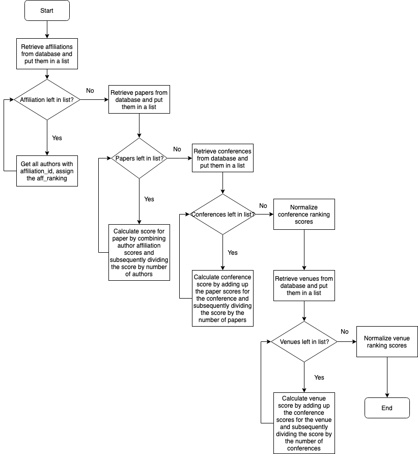
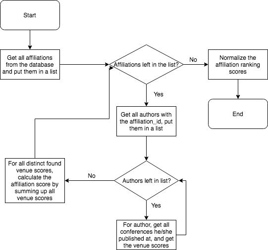

This website contains rankings for Computer Science Conferences and Universities. The aim of the ranking is to show which universities are best in publishing their papers at top conferences, and to show which conferences have the best universities publishing there. The way the ranking is calculated is based on the HITS-algorithm by Jon Kleinberg. This algorithm is built around the idea that the internet contains hubs and authorities. Authority scores are based on the number of hubs they are linked from, and hub scores are based on the number of authorities they link to. Read more about the HITS-algorithm here.
The idea of the ranking is to base university ranking scores on the conferences they published at, and the conference scores on the universities that have published there. To bootstrap the algorithm, the top 500 universities from QS, THE and ARWU have been retrieved and initial scorings have been calculated. After that, the algorithm was run for 6 cycles, to calculate all scorings to let the algorithm converge. In total, 3879 universities and 115 conference venues were ranked. This website only presents the top 1000 universities.
All data was retrieved from Google Scholar, dblp and Scopus.
A schematic overview of the algorithm:
The affiliation update method:
The university update method:
